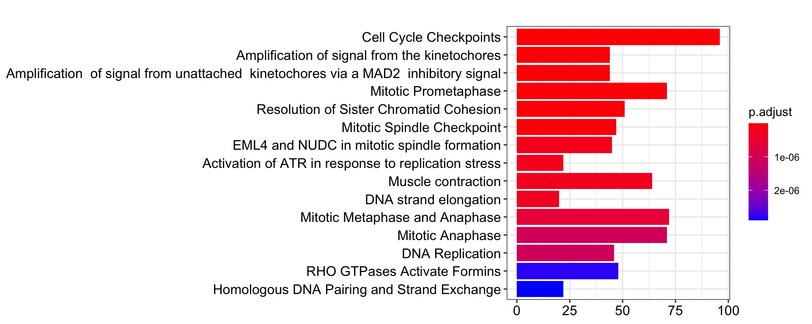
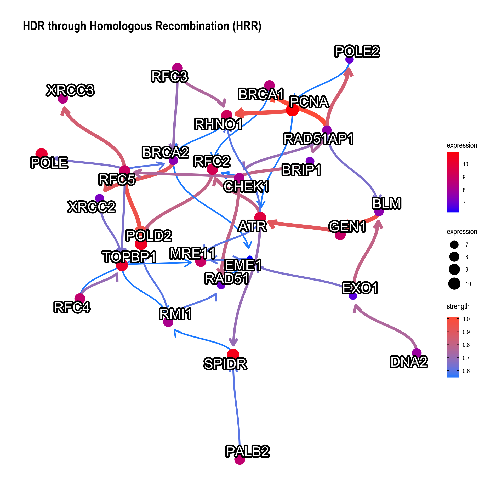
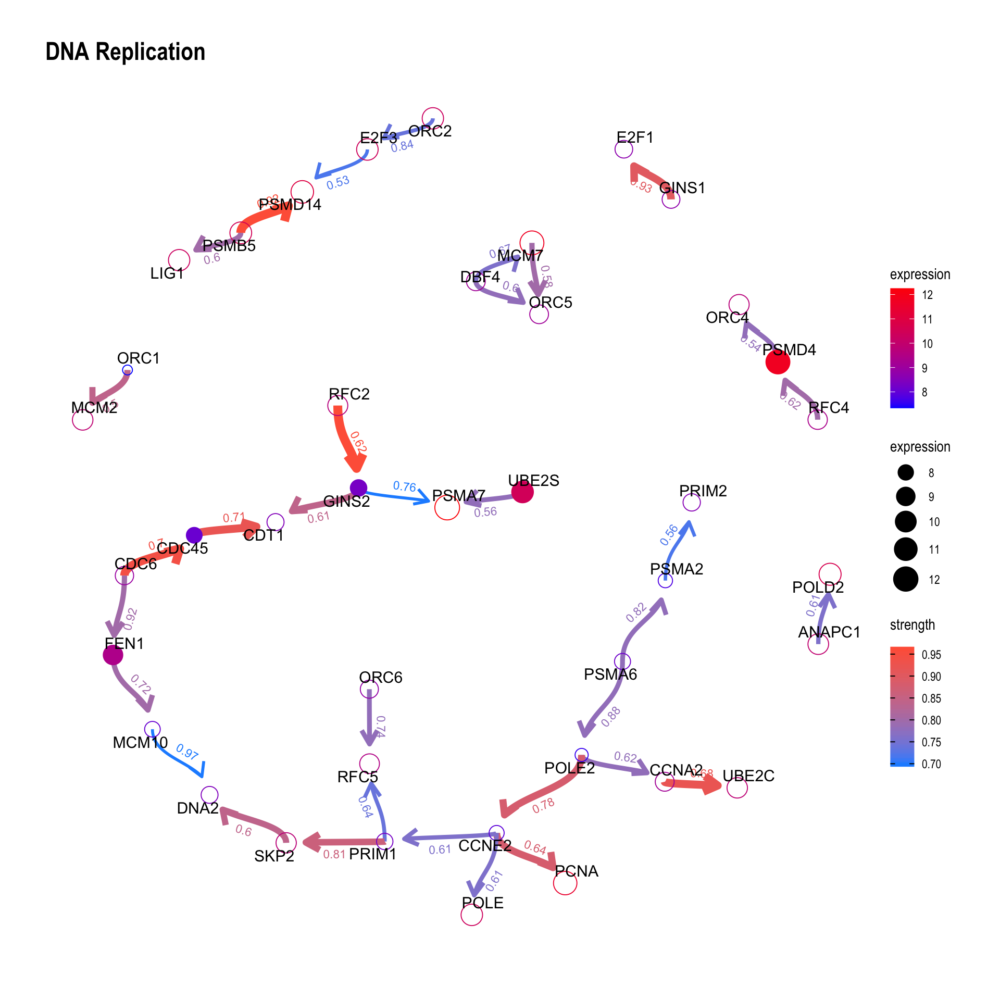
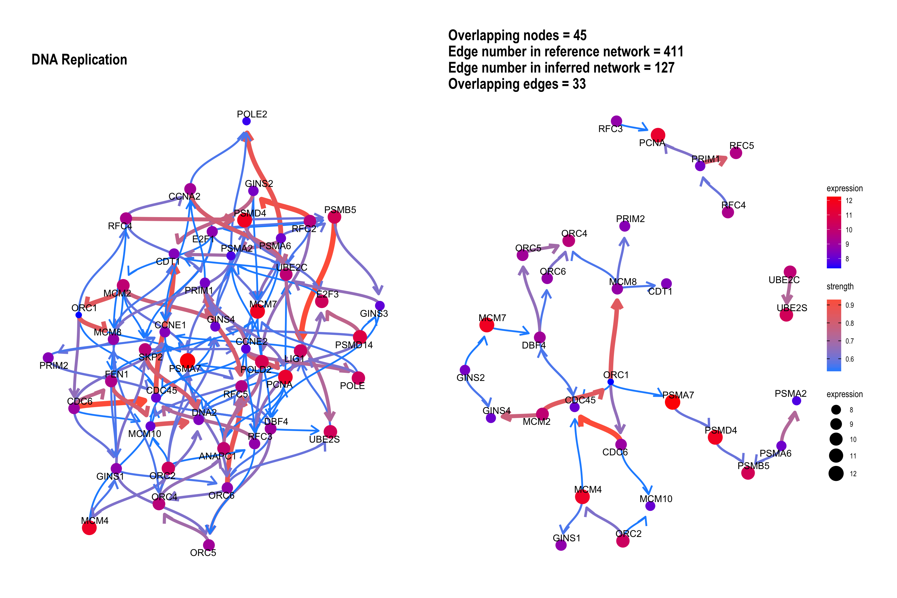
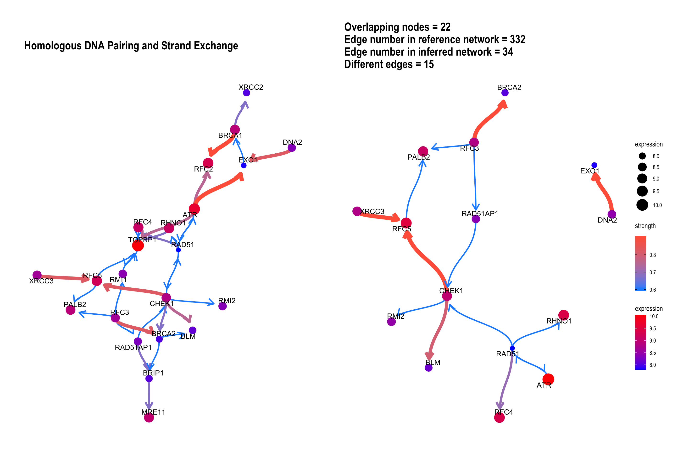
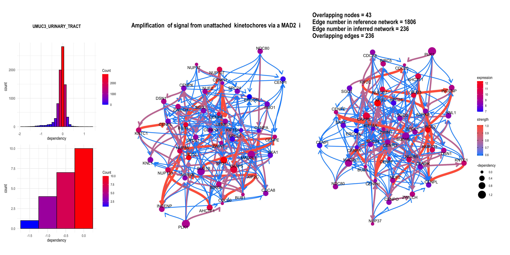
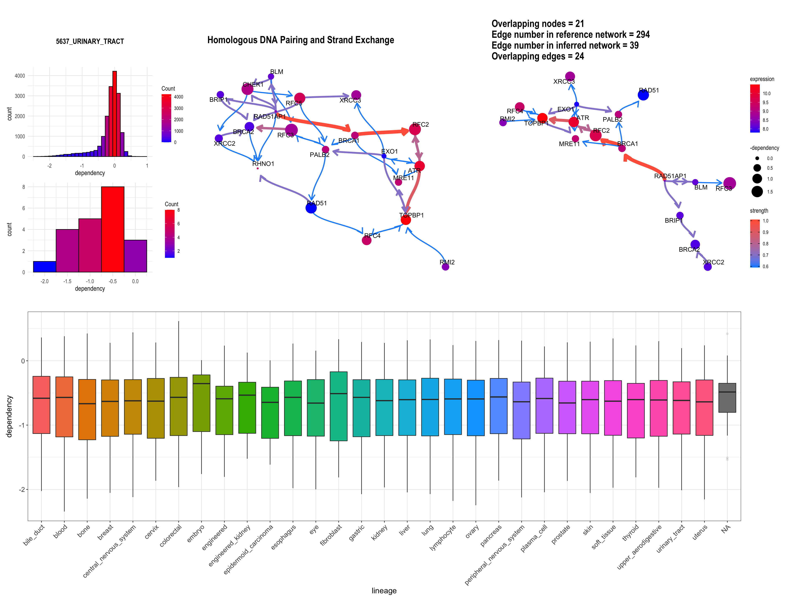

Chapter 3 bngeneplot
# Show top-30 pathways sorted by p-value in descending order.
pway@result$Description[1:30]FALSE [1] "Cell Cycle Checkpoints"
FALSE [2] "Amplification of signal from the kinetochores"
FALSE [3] "Amplification of signal from unattached kinetochores via a MAD2 inhibitory signal"
FALSE [4] "Mitotic Prometaphase"
FALSE [5] "Resolution of Sister Chromatid Cohesion"
FALSE [6] "Mitotic Spindle Checkpoint"
FALSE [7] "Activation of ATR in response to replication stress"
FALSE [8] "DNA strand elongation"
FALSE [9] "Mitotic Metaphase and Anaphase"
FALSE [10] "Muscle contraction"
FALSE [11] "DNA Replication"
FALSE [12] "RHO GTPases Activate Formins"
FALSE [13] "Mitotic Anaphase"
FALSE [14] "Homologous DNA Pairing and Strand Exchange"
FALSE [15] "HDR through Homologous Recombination (HRR)"
FALSE [16] "S Phase"
FALSE [17] "Separation of Sister Chromatids"
FALSE [18] "Synthesis of DNA"
FALSE [19] "Activation of the pre-replicative complex"
FALSE [20] "Extension of Telomeres"
FALSE [21] "Extracellular matrix organization"
FALSE [22] "M Phase"
FALSE [23] "Presynaptic phase of homologous DNA pairing and strand exchange"
FALSE [24] "Resolution of D-loop Structures through Holliday Junction Intermediates"
FALSE [25] "Mitotic G1-G1/S phases"
FALSE [26] "CDC6 association with the ORC:origin complex"
FALSE [27] "Resolution of D-Loop Structures"
FALSE [28] "DNA Double-Strand Break Repair"
FALSE [29] "G1/S Transition"
FALSE [30] "Resolution of D-loop Structures through Synthesis-Dependent Strand Annealing (SDSA)"3.1 barplot
The default barplot() from clusterProfiler.
barplot(pway, showCategory = 15)
3.2 The vanilla plot
This function plots inferred relationship between genes in the specific pathway, with the boot-strapped strength between genes. The normal plot can be plotted by passing the results of clusterProfiler or ReactomePA, and (normalized) expression values as well as candidate samples to be included in the inference. For the pathway including many genes, parallel computing of bootstrap-based inference can be specified with cl parameter.
Running bngeneplot in the default parameter.
bngeneplot(results = pway, exp = vsted, pathNum = 17)Change the label for the better readability.
bngeneplot(results = pway, exp = vsted, pathNum = 17, labelSize=7, shadowText=TRUE)
In general, specify samples to be included.
bngeneplot(results = pway, exp = vsted, expSample = incSample, pathNum = 17)If the resulting network is messy, we can set threshold for the averaged network, which is automatically set by function threshold() from blnearn if not specified. convertSymbol converts the output to SYMBOL.
bngeneplot(results = pway,
exp = vsted,
expSample = incSample,
pathNum = 17, R = 10,
convertSymbol = TRUE,
expRow = "ENSEMBL",
strThresh = 0.75)3.2.1 Show the confidence of direction
The value of the confidence of edge direction can be plotted by setting showDir = T. Note that the color represents the strength value.
bngeneplot(results = pway,
exp = vsted,
expSample = incSample,
pathNum = 13, R = 50, showDir = T,
convertSymbol = T,
expRow = "ENSEMBL",
strThresh = 0.7)3.2.2 Show the hub genes
Additionally, showing the hub gene (defined by hub parameter which highlights genes with top-\(n\) hub scores) is informative. Weighted Kleinberg’s hub centrality scores are calculated by igraph::hub_score().
bngeneplot(results = pway,
exp = vsted,
expSample = incSample,
pathNum = 13, R = 50, showDir = T,
convertSymbol = T,
expRow = "ENSEMBL", hub=5,
strThresh = 0.7)
3.3 The plot with the reference
The relationship between genes can be compared with the reference network by the option compareRef=TRUE and specifying pathDb.
By default, the intersection of two directed network is shown with the number of overlapping edges.
library(parallel)
cl = makeCluster(4)
bngeneplot(results = pway,
exp = vsted,
expSample = incSample,
pathNum = 13, R = 30, compareRef = T,
convertSymbol = T, pathDb = "reactome",
expRow = "ENSEMBL", cl = cl)
We can plot the difference between the reference network by specifying compareRefType="difference".
bngeneplot(results = pway,
exp = vsted,
expSample = incSample,
pathNum = 15, R = 10, compareRef = T,
convertSymbol = T, pathDb = "reactome", compareRefType = "difference",
expRow = "ENSEMBL")
3.4 The plot with the DepMap information
Additionally, DepMap dependency scores can be plotted as the size of nodes using depmap package by specifying sizeDep=TRUE. It is especially useful for cancer-related research. You must provide depmap::depmap_crispr() or the other data describing the dependency score to dep variable. If not, CRISPR scores are downloaded, cached and used. Additionally, the name of cell line interested must be specified. If sizeDep=T, the histogram of overall and within-pathway dependency scores will be plotted besides the network.
dep = depmap::depmap_crispr()
bngeneplot(results = pway,
exp = vsted,
expSample = incSample,
pathNum = 15, R = 5,compareRef = T,
convertSymbol = T, pathDb = "reactome", compareRefType = "intersection",
expRow = "ENSEMBL", sizeDep = T, dep = dep)It can be the RNA interference based score.
rnai = depmap::depmap_rnai()
bngeneplot(results = pway,
exp = vsted,
expSample = incSample,
pathNum = 3, R = 5,compareRef = T,
convertSymbol = T, pathDb = "reactome", compareRefType = "intersection",
expRow = "ENSEMBL", sizeDep = T, dep = rnai, cellLineName = "UMUC3_URINARY_TRACT")
Additionally, we can plot the dependency scores of interested genes across the lineage by specifying showLineage=TRUE. We must provide metadata from depmap::depmap_metadata() to depMeta.
depMeta = depmap::depmap_metadata()
bngeneplot(results = pway,
exp = vsted,
expSample = incSample,
pathNum = 15, R = 10, compareRef = T,
convertSymbol = T, pathDb = "reactome", compareRefType = "intersection",
expRow = "ENSEMBL", sizeDep = T, dep = dep, showLineage = T, depMeta = depMeta)
3.5 Plotting edge strengths
We can add a barplot depicting the edge strength and direction (probability), by specifying strengthPlot=TRUE and nStrength.
bngeneplot(results = pway,
exp = vsted,
expSample = incSample,
pathNum = 15, R = 10, compareRef = T,
convertSymbol = T, pathDb = "reactome", compareRefType = "intersection",
expRow = "ENSEMBL", sizeDep = T, dep = dep, strengthPlot = T, nStrength = 10)3.6 Plotting genes in multiple pathways
cl = makeCluster(8)
bngeneplot(results = pway,
exp = vsted,
expSample = incSample,
pathNum = c(15, 16), R = 10,
convertSymbol = T,
expRow = "ENSEMBL")